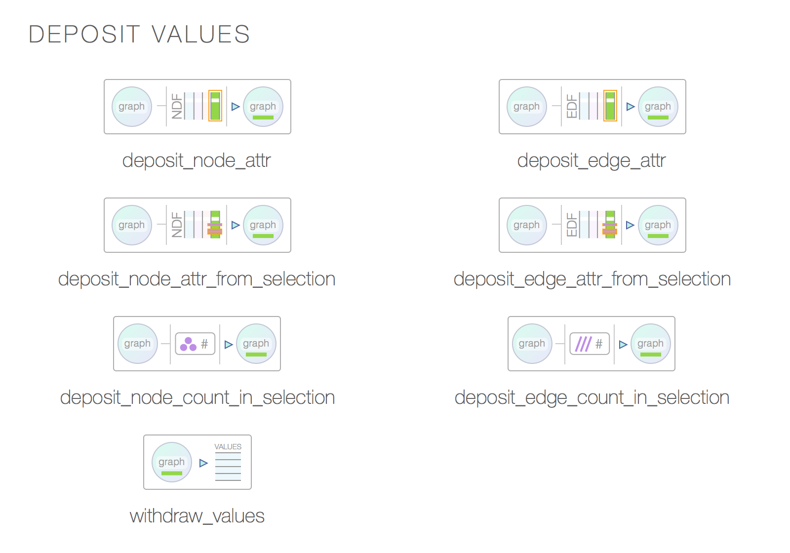
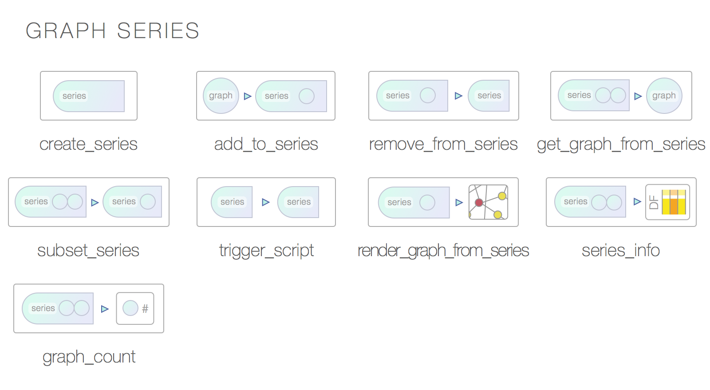
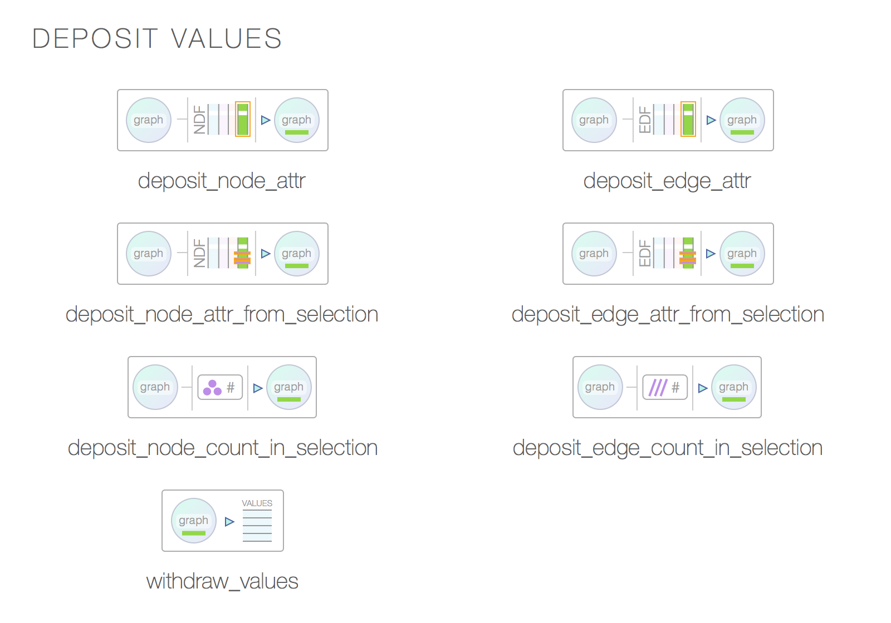
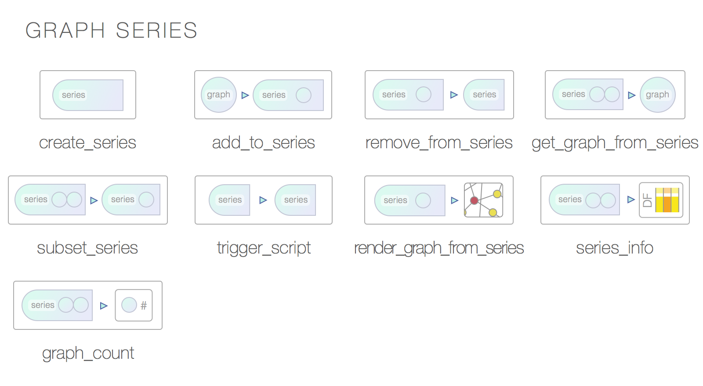

DiagrammeR Docs
Get an overview of DiagrammeR, learn the syntax, check out some examples.
Get an overview of DiagrammeR, learn the syntax, check out some examples.
DiagrammeR has a nice set of functions for building graphs. You can continually build the graph object, modify its attributes, get information from it, and render a graph diagram.
A collection of graph functions is available for creating and manipulating graphs (specifically, graph objects). They allow you to generate node and edge data frames (collections of nodes or edges along with their attributes), perform scaling of attribute values with data values, traverse the graph and obtain specific information from nodes and edges (and quite a bit more).


 



The DiagrammeR graph object, created by using the function create_graph(), holds information on a graph's nodes, edges, default attributes, and rendering code. Creating a graph object can be as simple as using create_graph(), however, that will be an empty graph and you'll want to populate it.
The DiagrammeR graph object holds buckets of data that reflect the current state of the graph. The graph can be inspected, nodes and edges can be added, edited, or removed, and, a visualization of the graph or export of its data can be made at any point. The different facets of what make up the graph object can be visualized as follows.
Essentially, the elements that make up a graph are tightly coupled inside the graph object. The myriad functions developed for working with the graph object:
Getting data into a graph object is made easier through the use of specialized data frames for that contain either node data and attributes and those data frames that contain edge data and edge attributes. These data frames are especially helpful when moving data from external sources into a graph. This is because these data frames are permitted to have columns of arbitrary data alongside columns named for node or edge attributes. Having columns of data available on a per-node or per-edge basis allows for easy numerical scaling of attributes and thus a highly visual means to differentiate nodes and edges by size, color, shape, opacity, length, and more.
If you're planning on creating graph diagrams and also making use of external datasets, you can make use of a set of DiagrammeR functions that work well with data frames. Data and attributes can be collected in this way, provided to a graph object, and then inspected, manipulated, and displayed.
These functions are used to create specialized data frames. One type is for nodes, the other for edges. The functions are useful because one can add field data to these data frames and selectively add and scale attributes. Some of the functions for creating node and edge data frames include:
create_nodes() Create a data frame with nodes and their attributescreate_edges() Create a data frame with edges and their attributescombine_nodes() Combine multiple node data frames into a single node data framecombine_edges() Combine multiple edge data frames into a single edge data frame


Both types of data frames are parsed and those column names that match attributes for either nodes (in the node data frame) or edges (in the edge data frame) will be used to provide attribute values on a per-node or per-edge basis. Columns with names that don't match reserved attribute names are disregarded and, because of this, you can include columns with useful data for analysis. When creating a data frame for nodes, it's important to have at least one column named nodes. That's where unique values for the node ID should reside. As for other attribute columns, here are all of the node attribute names and the types of values to supply:
color — provide an X11 or hexadecimal color (append 2 digits to hex for alpha)distortion — the node distortion for any shape = polygonfillcolor — provide an X11 or hexadecimal color (append 2 digits to hex for alpha)fixedsize — true or falsefontcolor — provide an X11 or hexadecimal color (append 2 digits to hex for alpha)fontname — the name of the fontfontsize — the size of the font for the node labelheight — the height of the nodelabel — the node label text that replaces the default text (which is the node ID)penwidth — the thickness of the stroke for the shapeperipheries — the number of peripheries (essentially, additional shape outlines)shape — the node shape (e.g., ellipse, polygon, circle, etc.)sides — if shape = polygon, the number of sides can be provided herestyle — usually given the value filled if you'd like to fill a node with a colortooltip — provide text here for an unstyled browser tooltipwidth — the width of the nodex — the x position of the node (requires graph attr layout = neato to use)y — the y position of the node (requires graph attr layout = neato to use)While you can use the data.frame() function to make a node data frame, it is likely better to use the provided create_nodes() function. It's similar in principle to the base R data.frame() function except that it adds in the following conveniences for graph diagram work:
label = FALSE will conveniently result in a non-labeled nodeThere may be occasion to combine several of these data frames into a single node data frame. This can be done with the combine_nodes() function (which works much like rbind() except that it accepts data frames with columns differing in number, names, and ordering).
###
# Create two data frames for nodes
# Singly supplied attribute values are repeated down
###
library(DiagrammeR)
# Create a node data frame
nodes_1 <-
create_nodes(nodes = c("a", "b", "c", "d"),
label = FALSE,
type = "lower",
style = "filled",
color = "aqua",
shape = c("circle", "circle",
"rectangle", "rectangle"),
data = c(3.5, 2.6, 9.4, 2.7))
nodes_1
#> nodes label type style color shape data
#> 1 a lower filled aqua circle 3.5
#> 2 b lower filled aqua circle 2.6
#> 3 c lower filled aqua rectangle 9.4
#> 4 d lower filled aqua rectangle 2.7
# Create another node data frame
nodes_2 <-
create_nodes(nodes = c("e", "f", "g", "h"),
label = FALSE,
type = "upper",
style = "filled",
color = "red",
shape = "triangle",
data = c(0.5, 3.9, 3.7, 8.2))
nodes_2
#> nodes label type style color shape data
#> 1 e upper filled red triangle 0.5
#> 2 f upper filled red triangle 3.9
#> 3 g upper filled red triangle 3.7
#> 4 h upper filled red triangle 8.1
###
# Combine two data frames for nodes
###
# Combine node data frames with 'combine_nodes'
all_nodes <- combine_nodes(nodes_1, nodes_2)
all_nodes
#> nodes label type style color shape data
#> 1 a lower filled aqua circle 3.5
#> 2 b lower filled aqua circle 2.6
#> 3 c lower filled aqua rectangle 9.4
#> 4 d lower filled aqua rectangle 2.7
#> 5 e upper filled red triangle 0.5
#> 6 f upper filled red triangle 3.9
#> 7 g upper filled red triangle 3.7
#> 8 h upper filled red triangle 8.2
When making a data frame for edge data, there are two columns that need to be present: one for the outgoing node edge (from), and, another for the incoming node edge (to). Each of the two columns should contain node IDs. As for the node data frame, attributes can be provided for edges. The following edge attributes can be used:
arrowhead — the arrow style at the head end (e.g, normal, dot)arrowsize — the scaling factor for the arrowhead and arrowtailarrowtail — the arrow style at the tail end (e.g, normal, dot)color — the stroke color; an X11 color or a hex code (add 2 digits for alpha)dir — the direction; either forward, back, both, or nonefontcolor — choose an X11 color or provide a hex code (append 2 digits for alpha)fontname — the name of the fontfontsize — the size of the font for the node labelheadport — a cardinal direction for where the arrowhead meets the nodelabel — label text for the line between nodesminlen — minimum rank distance between head and tailpenwidth — the thickness of the stroke for the arrowtailport — a cardinal direction for where the tail is emitted from the nodetooltip — provide text here for an edge tooltipUse the create_edges() function to create data frames for edges and their attributes. Data frames for edge definitions and their associated attributes can then be safely combined using the combine_edges() function.
###
# Create two data frames for edges
# Singly supplied attribute values are repeated down
###
library(DiagrammeR)
# Create an edge data frame
edges_1 <-
create_edges(from = c("a", "a", "b", "c"),
to = c("b", "d", "d", "a"),
rel = "requires",
color = "green",
data = c(2.7, 8.9, 2.6, 0.6))
edges_1
#> from to rel color data
#> 1 a b requires green 2.7
#> 2 a d requires green 8.9
#> 3 b d requires green 2.6
#> 4 c a requires green 0.6
# Create another edge data frame
edges_2 <-
create_edges(from = c("e", "g", "h", "h"),
to = c("g", "h", "f", "e"),
rel = "receives",
arrowhead = "dot",
color = "red")
edges_2
#> from to rel arrowhead color
#> 1 e g receives dot red
#> 2 g h receives dot red
#> 3 h f receives dot red
#> 4 h e receives dot red
###
# Combine two data frames for edges
###
# Combine edge data frames with 'combine_edges'
all_edges <- combine_edges(edges_1, edges_2)
all_edges
#> from to rel color data arrowhead
#> 1 a b requires green 2.7
#> 2 a d requires green 8.9
#> 3 b d requires green 2.6
#> 4 c a requires green 0.6
#> 5 e g receives red dot
#> 6 g h receives red dot
#> 7 h f receives red dot
#> 8 h e receives red dot
Eventually, you'll want to make a graph and then see that graph. There are 2 functions that make graph creation and viewing possible:
create_graph() Create a graph object using data frames representative of nodes and edgesrender_graph() Render the graph or output in various formats

With the create_graph() function, it's possible to generate a graph diagram object without interacting directly with DOT code. The function has the following options:
create_graph(
nodes_df, # provide the name of the data frame with node info
edges_df, # provide the name of the data frame with edge info
graph_attrs, # provide a vector of `graph` attributes
node_attrs, # provide a vector of `node` attributes as defaults
edge_attrs, # provide a vector of `edge` attributes as defaults
directed # is the graph to be directed or undirected? Choose
# `TRUE` or `FALSE`
)
The create_graph() function returns a dgr_graph object, which can be used by additional processing functions.
The render_graph() function allows for both visualizing the graph object and creating output files:
render_graph(
graph, # a 'dgr_graph' object, created using the `create_graph()` function
output, # a string specifying the output type; `graph` (the default) renders
# the graph and `DOT` outputs DOT code for the graph
width, # optionally set a width in pixels
height # optionally set a height in pixels
)
For a first, simple example we can create an empty graph by using the create_graph() function and supplying no arguments. This may be useful for initializing a graph object and then adding nodes and edges using functions such as add_node() and add_edge().
###
# Create an empty graph
###
library(DiagrammeR)
# Create the graph object
graph <- create_graph()
graph
#> $nodes_df
#> NULL
#>
#> $edges_df
#> NULL
#>
#> $graph_attrs
#> NULL
#>
#> $node_attrs
#> NULL
#>
#> $edge_attrs
#> NULL
#>
#> $directed
#> [1] TRUE
#>
#> $dot_code
#> [1] "digraph {\n\n}"
#>
#> attr(,"class")
#> [1] "dgr_graph"This next example will include just nodes in a graph object, and, quite often you'll want to have node or edge attributes that should apply to all nodes and edges in the graph. For that there's no need to create columns for those shared attributes (where you might repeat attribute values through all rows of a node or edge data frame). Instead, supply vectors of attribute statements for the node_attrs or edge_attrs arguments in the create_graph() function. In this example, a graph containing just nodes will be created.
###
# Create a graph with nodes but no edges
###
library(DiagrammeR)
# Create a node data frame
nodes <-
create_nodes(nodes = c("a", "b", "c", "d"),
label = FALSE,
type = "lower",
style = "filled",
color = "aqua",
shape = c("circle", "circle",
"rectangle", "rectangle"),
data = c(3.5, 2.6, 9.4, 2.7))
graph <- create_graph(nodes_df = nodes)
graph
#> $nodes_df
#> nodes label type style color shape data
#> 1 a lower filled aqua circle 3.5
#> 2 b lower filled aqua circle 2.6
#> 3 c lower filled aqua rectangle 9.4
#> 4 d lower filled aqua rectangle 2.7
#>
#> $edges_df
#> NULL
#>
#> $graph_attrs
#> NULL
#>
#> $node_attrs
#> NULL
#>
#> $edge_attrs
#> NULL
#>
#> $directed
#> [1] TRUE
#>
#> $dot_code
#> [1] "digraph {\n\n 'a' [label = ' ', style = 'filled',...
#>
#> attr(,"class")
#> [1] "dgr_graph"
# View the graph in the RStudio Viewer
render_graph(graph)This next example will include both nodes and edges contained within a graph object. In this case, values for the type and rel attributes for nodes and edges, respectively, were provided. Adding values for those attributes is optional but will be important for any data modelling work.
###
# Create a graph with both nodes and edges
# defined, and, add some default attributes
# for nodes and edges
###
library(DiagrammeR)
# Create a node data frame
nodes <-
create_nodes(nodes = c("a", "b", "c", "d"),
label = FALSE,
type = "lower",
style = "filled",
color = "aqua",
shape = c("circle", "circle",
"rectangle", "rectangle"),
data = c(3.5, 2.6, 9.4, 2.7))
edges <-
create_edges(from = c("a", "b", "c"),
to = c("d", "c", "a"),
rel = "leading_to")
graph <-
create_graph(nodes_df = nodes,
edges_df = edges,
node_attrs = "fontname = Helvetica",
edge_attrs = c("color = blue",
"arrowsize = 2"))
graph
#> $nodes_df
#> nodes label type style color shape data
#> 1 a lower filled aqua circle 3.5
#> 2 b lower filled aqua circle 2.6
#> 3 c lower filled aqua rectangle 9.4
#> 4 d lower filled aqua rectangle 2.7
#>
#> $edges_df
#> from to rel
#> 1 a d leading_to
#> 2 b c leading_to
#> 3 c a leading_to
#>
#> $graph_attrs
#> [1] NULL
#>
#> $node_attrs
#> [1] "fontname = Helvetica"
#>
#> $edge_attrs
#> [1] "color = blue" "arrowsize = 2"
#>
#> $directed
#> [1] TRUE
#>
#> $dot_code
#> [1] "digraph {\n\ngraph [rankdir = LR]\n\nnode [fontnam...
#>
#> attr(,"class")
#> [1] "dgr_graph"
# View the graph in the RStudio Viewer
render_graph(graph)The graph attributes can be set in a similar manner by supplying a vector to the graph_attrs argument. In the next rendering, the layout engine is set to twopi and this provides for a radically different layout of nodes than the standard method. Also, because we are using sampling in this example, setting a seed with set.seed() will make the example reproducible.
###
# Create a graph
###
library(DiagrammeR)
set.seed(23)
# Create a node data frame
nodes <-
create_nodes(nodes = LETTERS,
type = "letter",
shape = sample(c("circle", "rectangle"),
length(LETTERS),
replace = TRUE),
fillcolor = sample(c("aqua", "gray80",
"pink", "lightgreen",
"azure", "yellow"),
length(LETTERS),
replace = TRUE))
edges <-
create_edges(from = sample(LETTERS, replace = TRUE),
to = sample(LETTERS, replace = TRUE),
rel = "letter_to_letter")
graph <-
create_graph(nodes_df = nodes,
edges_df = edges,
graph_attrs = "layout = neato",
node_attrs = c("fontname = Helvetica",
"style = filled"),
edge_attrs = c("color = gray20",
"arrowsize = 0.5"))
# View the graph in the RStudio Viewer
render_graph(graph)With packages such as magrittr or pipeR, one can conveniently pipe output from create_graph() to render_graph(). The magrittr package provides a forward pipe with the %>% operator. With pipeR, use %>>% instead.
If you'd like to return the Graphviz DOT code (to, perhaps, share it or use it directly with the Graphviz command-line utility), just use output = "DOT" in the render_graph() function. Here's a simple example:
###
# Create node and edge data frames for graph
###
library(DiagrammeR)
library(pipeR)
# Create a node data frame
nodes <-
create_nodes(nodes = LETTERS,
type = "letter",
shape = sample(c("circle", "rectangle"),
length(LETTERS),
replace = TRUE),
fillcolor = sample(c("aqua", "gray80",
"pink", "lightgreen",
"azure", "yellow"),
length(LETTERS),
replace = TRUE))
edges <-
create_edges(from = sample(LETTERS, replace = TRUE),
to = sample(LETTERS, replace = TRUE),
rel = "letter_to_letter")
# Use the magrittr %>% operator between 'create_graph',
# and 'render_graph' or 'display_graph_object' calls
create_graph(nodes_df = nodes,
edges_df = edges,
graph_attrs = "layout = neato",
node_attrs = c("fontname = Helvetica",
"style = filled"),
edge_attrs = c("color = gray20",
"arrowsize = 0.5")) %>%
render_graph
create_graph(nodes_df = nodes,
edges_df = edges,
graph_attrs = "layout = neato",
node_attrs = c("fontname = Helvetica",
"style = filled"),
edge_attrs = c("color = gray20",
"arrowsize = 0.5")) %>%
display_graph_object
# Use the %>% operator between 'create_graph',
# 'render_graph', and 'cat' calls; the 'dot.gv' can be
# directly opened in Rstudio and further edited
create_graph(nodes_df = nodes,
edges_df = edges,
graph_attrs = "layout = neato",
node_attrs = c("fontname = Helvetica",
"style = filled"),
edge_attrs = c("color = gray20",
"arrowsize = 0.5")) %>%
render_graph(output = "DOT") %>% cat(file = "~/dot.gv")Knowing what's in the graph is important. Several functions allow you to get information about the current state of the graph object. You can get very general information about the graph's node or edges, or, more specific information such as the predecessors and successors for a certain node in the graph
There are 12 functions that can be used to inspect graphs:
node_info() Get detailed information on nodesedge_info() Get detailed information on edgesnode_present() Determine whether a specified node is present in an existing graph objectedge_present() Determine whether a specified edge is present in an existing graph objectget_nodes() Get vector of node IDsget_edges() Get node IDs associated with edgesget_predecessors() Get node IDs for predecessor nodes to the specified nodeget_successors() Get node IDs for successor nodes to the specified nodenode_count() Get count of all nodes or certain types of nodesedge_count() Get count of all edges or edges with distinct relationship typesis_graph_empty() Is the graph empty?is_graph_directed() Is the graph a directed graph?


The node_info() and edge_info() functions provide information about the nodes and edges in the graph. The information is presented in the form of a data frame. For node_info(), the following data is returned:
nodelabeltypedegreeindegreeoutdegreeloopsFrom the edge_info() function, the resultant data frame has the following columns:
fromtorellabelThe node_present() and edge_present() functions are used to determine whether a node (based on its node ID) or an edge (based on two node IDs) is present in a graph object. Both functions return a logical value of either TRUE or FALSE.
The purpose of the get_nodes() and get_edges() functions is to return either all of the nodes or edges (i.e., pairs of nodes, ordered by direction) available in the graph, or, in data frames for nodes or edges. For get_nodes(), one can simply supply either a graph object, a data frame for nodes, or a data frame for edges, and a vector of node IDs will be returned. For the get_edges() function, there is an additional argument called return_type, where you can specify three different types of return objects: a list with return_type = list, a data frame with return_type = df, and a character vector with return_type = vector. Whereas get_nodes() works with graph objects and data frames for nodes and edges, get_edges() works only with graph objects and node data frames.
The get_predecessors() and get_successors() function take both a graph object and a specified node in that graph and determine which nodes are its predecessors or successors, respectively.
To get a count of all or certain types of nodes available in the graph, you can use the node_count() function. The argument type can either be supplied with a TRUE or FALSE value, or, a character vector containing the values for the node type which may be available for nodes in the graph. Providing TRUE will issue a named vector of node counts by their type. Any nodes with a type attribute not set with a value are placed into a separate count category. Using type = FALSE with node_count() simply supplies a single-value vector with a total count of nodes in the graph. By providing a vector of character values of available node type values, a numerical named vector of counts for only those specified types will be returned.
The is_graph_empty() and is_graph_directed() functions simply return either TRUE or FALSE for whether the graph is empty or whether the graph is a directed graph. These are likely to be most useful in verification statement for scripts that add and remove nodes from the graph, or, those scripts that may toggle the graph between directed and undirected states.
###
# Create a graph
###
library(DiagrammeR)
set.seed(26)
# Create a node data frame
nodes <-
create_nodes(nodes = LETTERS,
label = TRUE,
type = c(rep("a_to_g", 7),
rep("h_to_p", 9),
rep("q_to_x", 8),
rep("y_and_z",2)))
# Create an edge data frame
edges <-
create_edges(from = sample(LETTERS, replace = TRUE),
to = sample(LETTERS, replace = TRUE),
label = "edge",
rel = "letter_to_letter")
# Create a graph object
graph <-
create_graph(nodes_df = nodes,
edges_df = edges,
graph_attrs = "layout = neato",
node_attrs = c("fontname = Helvetica",
"shape = circle"))
###
# Is the graph empty?
###
# Use the 'is_graph_empty' function to return a logical value
is_graph_empty(graph)
#> FALSE
###
# Get basic information on the graph's nodes and edges
###
# Use the 'node_info' function to return a data frame
node_info(graph)
#> node_ID label type degree indegree outdegree loops
#> 1 A A a_to_g 2 0 2 0
#> 2 W W q_to_x 1 0 1 0
#> 3 T T q_to_x 2 0 2 0
#> 4 L L h_to_p 1 0 1 0
#> 5 F F a_to_g 0 0 0 0
#>.. ... ... ... ... ... ... ...
# Use the 'edge_info' function to return a data frame
edge_info(graph)
#> from to rel label
#> 1 A Z letter_to_letter edge
#> 2 H U letter_to_letter edge
#> 3 W O letter_to_letter edge
#> 4 U K letter_to_letter edge
#> 5 I V letter_to_letter edge
#>.. ... ... ... ...
###
# Find out if a node is present in the graph
###
# Verify that node with ID 'a' is not in graph
# with the 'node_present' function
node_present(graph, "a")
#> FALSE
# Is node with ID 'A' in the graph?
node_present(graph, "A")
#> TRUE
# Are all node ID values from the LETTERS vector in the graph?
all(sapply(LETTERS, function(x) node_present(graph, x)))
#> TRUE
###
# Find out if an edge is present in the graph
###
# Is there any edge between nodes with IDs 'A' and 'B'?
# Use the 'edge_present' function to find out
edge_present(graph, from = "A", to = "B")
#> FALSE
# Verify that there is an edge between nodes 'K' and 'V'
edge_present(graph, from = "K", to = "V")
#> TRUE
###
# Get vector of all nodes in a graph, or in data frames
# for nodes or edges
###
# Use the 'get_nodes' function to return node ID values
get_nodes(graph)
#> [1] "A" "B" "C" "D" "E" "F" "G" "H" "I" "J" "K" "L"
#> [13] "M" "N" "O" "P" "Q" "R" "S" "T" "U" "V" "W" "X"
#> [25] "Y" "Z"
# Can extract a vector of node ID values from a data frame
# for nodes
table(get_nodes(nodes) %in% get_nodes(graph))
#>
#> TRUE
#> 26
# Can also extract a vector of node ID values from a
# data frame for edges
table(get_nodes(graph) %in% get_nodes(edges))
#>
#> FALSE TRUE
#> 3 23
###
# Get object with all edges in a graph, or in a data
# frame for edges
###
# Can get the 'outgoing' and 'incoming' node ID values
# in a list object
get_edges(graph, return_type = "list") # the default
#> [[1]]
#> [1] "A" "H" "W" "U" "I" "M" "U" "T" "I" "R" "O"
#> [12] "G" "O" "A" "V" "I" "M" "K" "R" "T" "Y" "R"
#> [23] "M" "L" "H" "V"
#> [[2]]
#> [1] "Z" "U" "O" "K" "V" "M" "N" "C" "D" "Z" "B"
#> [12] "G" "U" "Y" "H" "V" "R" "V" "Z" "S" "Q" "I"
#> [23] "P" "S" "E" "P"
# Similarly, you can specify that a data frame is given
get_edges(graph, return_type = "df")
#> from to
#> 1 A Z
#> 2 H U
#> 3 W O
#> 4 U K
#> 5 I V
#>.. ... ..
# A character string with node IDs can also be obtained
get_edges(graph, return_type = "vector")
#> [1] "A -> Z" "H -> U" "W -> O" "U -> K" "I -> V"
#> [6] "M -> M" "U -> N" "T -> C" "I -> D" "R -> Z"
#> [11] "O -> B" "G -> G" "O -> U" "A -> Y" "V -> H"
#> [16] "I -> V" "M -> R" "K -> V" "R -> Z" "T -> S"
#> [21] "Y -> Q" "R -> I" "M -> P" "L -> S" "H -> E"
#> [26] "V -> P"
###
# As with 'get_nodes', the 'get_edges' function works
# in an analogous manner with data frames for edges
###
all(get_edges(edges, return_type = "list")[[1]] ==
get_edges(graph, return_type = "list")[[1]])
#> TRUE
all(get_edges(edges, return_type = "df") ==
get_edges(graph, return_type = "df"))
#> TRUE
all(get_edges(edges, return_type = "vector") ==
get_edges(graph, return_type = "vector"))
#> TRUE
###
# Get all the predecessors or all of the successors
# of a given node
###
# If there are no predecessors, NA is returned
get_predecessors(graph, node = "A")
#> [1] NA
get_successors(graph, node = "A")
#> [1] "Z" "Y"
get_successors(graph, node = "Z")
#> [1] NA
get_predecessors(graph, node = "Z")
#> [1] "A" "R" "R"
# Find isolated nodes in a graph (they have neither successors
# nor predecessors)
intersect(
names(which(is.na(sapply(get_nodes(graph),
function(x) get_successors(graph, x))))),
names(which(is.na(sapply(get_nodes(graph),
function(x) get_predecessors(graph, x)))))
)
#> [1] "F" "J" "X"
# The isolated nodes can also be found by subsetting 'node_info'
node_info(graph)[which(node_info(graph)["degree"] == 0), ][, 1]
#> [1] "F" "J" "X"
###
# Get a count of all nodes in a graph
###
# Get counts of nodes grouped by the 'type' attribute
node_count(graph, type = TRUE) # the default
#> a_to_g h_to_p q_to_x y_and_z
#> 7 9 8 2
# Get a total count of nodes with no grouping
node_count(graph, type = FALSE)
#> [1] 26Add nodes, delete edges, modify relationships between nodes, and set node type declarations. Those are some of the things you can do with these graph construction/destruction functions.
There are 6 functions with which one can modify graphs:
add_node() Add a node to an existing graph objectadd_edge() Add edges to an existing graph objectdelete_node() Delete a node from an existing graph objectdelete_edge() Delete an edge from an existing graph objectnode_type() Create, read, update, delete, or report status of a node type definitionedge_rel() Create, read, update, delete, or report status of an edge relationship


The add_node() function allows one to add a single node to a graph. Specify the graph to which the node should be added and the node ID for the node argument, and a node will be added. While the other arguments are optional, using just graph and node will result in the addition of an unconnected node. This might be desirable (say, if the graph is empty), but the more likely case is that edges to other nodes will be required upon addition of a new node. The from and to arguments (both optional) are where you would specify connections from existing nodes to the new node (with to), and connections to existing nodes from the new node (with from). A vector of node IDs can be supplied to either argument. The label and type arguments allow for direct setting of these node attributes during the addition of a node. Finally, a named vector of node attributes and their values can be included in the add_node() call.
The add_edge() function is meant for adding edges between extant graph nodes. Because the nodes must exist in the graph, this function cannot be invoked for an empty graph. (It can, however, be used for a graph with a single node since an edge can be created as a loop from and to the same node.) there are two means to add edges to a graph with this function:
from and to nodes for the edge to be added; add an edge rel string as a value for the rel argumentIt can be advantageous to supply a data frame for edges to this function's edges_df argument. This simply because one can supply a range of edge attributes for the new edge. On the other hand, providing only values to the from, to, and rel arguments may be sufficient, especially if styling if not required or handled through default edge attributes.
The function delete_node() removes a node from the graph. All of the removed node's edges with other nodes in the graph will also be removed in this operation. Supply only a single node ID to the node argument.
The function delete_edge() removes an edge from the graph. Specify the graph object in graph, the nodes in nodes, and the function will remove that edge if it exists.
The node_type() function provides various means to check the type attribute for a node and perform different operations on that attribute. The different functionalities of node_type can be changed through the use of these different keywords for the action argument: read, check, add, update, and delete. With read set as the action, a node ID supplied with the graph object yields that node's type attribute. Using action = check with a node ID, you can check whether a type attribute exists (it will return TRUE or FALSE. If the type attribute hasn't been set for a node, you can add that using action = add along with a string supplied for the value argument. If a type attribute has alredy been set for a node and you'd like to change it, use action = update and include the updated string with the value argument. Deleting a type attribute for a node is easily accomplished by using action = delete.
The edge_rel() function is similar in principle and use to the node_type() function. In this function, the edges' rel attribute can be checked for existence, added, removed, or updated. As with the node_type() function, this function uses the action argument and performs various actions with these keywords: read, check, add, update, and delete (same keywords as those for node_type()). Using read, supply node IDs for the from and to arguments. With that, you will receive the edge's currently set rel attribute. The rel attribute may or may not be set, so, using action = check with a specified edge, the existence of the rel attribute can be verified through a TRUE or FALSE return value. An unset rel attribute for an edge can be set by using action = add and a character string for the value argument. To update an already set rel attribute for an edge, use action = update and provide the updated relationship string with the value argument. Deleting a rel attribute for an edge is done by using action = delete with an edge.
library(DiagrammeR)
# Create an empty graph
graph <- create_graph()
# Add two nodes
graph <- add_node(graph, node = "a")
graph <- add_node(graph, node = "b")
# Get information on all nodes in graph
node_info(graph)
#> node_ID label type degree indegree outdegree loops
#> 1 a a NA 0 0 0 0
#> 2 b b NA 0 0 0 0
# Add an edge
graph <- add_edge(graph, from = "a", to = "b",
rel = "to_get")
# Get information on all edges in graph
edge_info(graph)
#> edge_from edge_to rel label
#> 1 a b to_get NA
# Add two more nodes
graph <- add_node(graph, node = "c")
graph <- add_node(graph, node = "d")
# Get information on all nodes in graph
node_info(graph)
#> node_ID label type degree indegree outdegree loops
#> 1 a a NA 1 0 1 0
#> 2 c c NA 0 0 0 0
#> 3 d d NA 0 0 0 0
#> 4 b b NA 1 1 0 0
# Add two more edges
graph <-
add_edge(graph,
from = c("a", "a"),
to = c("c", "d"),
rel = "received_from")
# Get information on all edges in graph
edge_info(graph)
#> edge_from edge_to rel label
#> 1 a b to_get NA
#> 2 a c received_from NA
#> 3 a d received_from NA
# Remove a node (removing a node removes its edges)
graph <- delete_node(graph, node = "d")
# Get information on all nodes in graph
node_info(graph)
#> node_ID label type degree indegree outdegree loops
#> 1 a a NA 2 0 2 0
#> 2 b b NA 1 1 0 0
#> 3 c c NA 1 1 0 0
# Remove an edge (removing an edge retains nodes)
graph <- delete_edge(graph, from = "a", to = "c")
# Get information on all edges in graph
edge_info(graph)
#> edge_from edge_to rel label
#> 1 a b to_get NAThere may be situations where multiple graphs are required for analysis. A convenient means to work with several graphs is with the graph series object, which serializes graph objects. The time and sequence properties of the contained graphs can be used for subsetting. Scripts can be triggered for the series that allow for things such as data collection and creation of multiple graphs within the series object.
There are 8 functions available for working with a graph series:
create_series() Create a graph series objectadd_to_series() Add graph object to a graph series objectremove_from_series() Remove graph object from a graph series objectgraph_count() Count graphs in a graph series objectsubset_series() Subset a graph series objecttrigger_script() Trigger a script embedded in a graph series objectrender_graph_from_series() Render a graph available in a seriesseries_info() Get detailed information on a graph seriesThe following example demonstrates how to create a series object with an existing graph object using the create_series() and add_to_series() functions. Since we'd likely want to be able to remove graphs from a series, the remove_from_series() function will be used. The use of count_graphs() and series_info() allows us to get information about the graph series object: count_graphs() returns a simple count of graph objects are present in a graph series, and series_info() yields a data frame with basic information about each graph object present in the graph series.
#####
# Create and manipulate a graph series
#####
library(DiagrammeR)
library(pipeR)
# Create three different graphs
graph_1 <- create_graph() %>%
add_node("a") %>% add_node("b") %>% add_node("c") %>%
add_edge(from = c("a", "a", "b"),
to = c("c", "b", "c"))
graph_2 <- graph_1 %>%
add_node("d") %>% add_edge(from = "d", to = "c")
graph_3 <- graph_2 %>%
add_node("e") %>% add_edge(from = "e", to = "b")
# Create an empty graph series
series <- create_series(series_type = "sequential")
# Confirm that the series is empty
graph_count(series)
#> [1] 0
# Add graphs to the graph series
series <- graph_1 %>% add_to_series(series)
series <- graph_2 %>% add_to_series(series)
series <- graph_3 %>% add_to_series(series)
# Count the number of graphs in the series
graph_count(series)
#> [1] 3
# Get information on the graphs in the series
series_info(series)
#> graph name date_time tz nodes edges directed
#> 1 1 <NA> <NA> <NA> 3 3 TRUE
#> 2 2 <NA> <NA> <NA> 4 4 TRUE
#> 3 3 <NA> <NA> <NA> 5 5 TRUE
# Remove 2 graphs from graph series
series <- remove_from_series(graph_series = series, index = 2)
series <- remove_from_series(graph_series = series, index = "last")
# Count the number of graphs in the series
graph_count(series)
#> [1] 1With the subset_series() function you can create a graph series object that contains a subset of graphs. This is useful if you collect and process data into temporal graphs and you'd like to conduct an analysis over some time frame (e.g., graphs generated from collected data on weekdays vs. those graphs using data on weekend days). The subset_series() function works well with both sequential and temporal graph series types.
#####
# Subset a graph series by time and by sequence
#####
library("DiagrammeR")
library("pipeR")
# Create two graphs with the time attributes set
graph_time_1 <-
create_graph(graph_name = "graph_with_time_1",
graph_time = "2015-03-25 03:00",
graph_tz = "GMT") %>%
add_node("a") %>% add_node("b") %>% add_node("c") %>%
add_edge(from = c("a", "a", "b"),
to = c("c", "b", "c"))
graph_time_2 <-
create_graph(graph_name = "graph_with_time_2",
graph_time = "2015-03-26 03:00",
graph_tz = "GMT") %>%
add_node("d") %>% add_node("e") %>% add_node("f") %>%
add_edge(from = c("d", "d", "e"),
to = c("f", "e", "f"))
graph_time_3 <-
create_graph(graph_name = "graph_with_time_3",
graph_time = "2015-03-27 15:00",
graph_tz = "GMT") %>%
add_node("x") %>% add_node("y") %>% add_node("z") %>%
add_edge(from = c("x", "x", "y"),
to = c("z", "y", "z"))
# Create an empty graph series
series_temporal <- create_series(series_type = "temporal")
# Add graphs to the graph series
series_temporal <- graph_time_1 %>% add_to_series(series_temporal)
series_temporal <- graph_time_2 %>% add_to_series(series_temporal)
series_temporal <- graph_time_3 %>% add_to_series(series_temporal)
# Subset graph series by sequence
series_sequence_subset <-
subset_series(graph_series = series_temporal,
by = "number",
values = 2)
graph_count(series_sequence_subset)
#> [1] 1
# Subset graph series by date-time
series_time_subset <-
subset_series(graph_series = series_temporal,
by = "time",
values = c("2015-03-25 12:00",
"2015-03-26 12:00"),
tz = "GMT")
graph_count(series_time_subset)
#> [1] 1Because data collection and using rules to determine how the graph should be generated can be scripted, it makes sense to have those scripts close at hand and also to have the ability to periodically trigger those scripts. For this use case, the trigger_script() function will prove useful. It simply runs a script contained in a graph series object, and, returns a modified graph series object. In the following example, a script is directly added to graph series object as a character vector. There is the option to instead use a reference to an **R** script on disk. This is done by supplying a path to the file (including the file name) in the series_scripts argument when calling the create_series() function.
In the following example, a script essentially takes an empty graph series and builds up a random graph, adding a new node and edges with each triggering of the script. On new days, the script will create a new graph and build that graph. Throughout the script, _SELF_ refers to the graph series in which the script is contained.
#####
# Trigger a script and render select graphs from a graph series
#####
library("DiagrammeR")
sample_node_script <-
'
graph_attrs <- c("layout = twopi",
"overlap = FALSE",
"outputorder = edgesfirst")
node_attrs <- c("shape = circle",
"fixedsize = TRUE",
"width = 1",
"penwidth = 1",
"color = DodgerBlue",
"style = filled",
"fillcolor = Aqua",
"alpha_fillcolor = 0.5",
"fontname = Helvetica",
"fontcolor = Grey25")
edge_attrs <- c("arrowhead = dot",
"minlen = 1.5",
"color = Green",
"penwidth = 2")
# If there is no graph available in the series, then, make one!
if (graph_count(graph_series = _SELF_) == 0){
_SELF_ <-
add_to_series(graph = create_graph(graph_attrs = graph_attrs,
node_attrs = node_attrs,
edge_attrs = edge_attrs,
graph_name = paste0("data_", Sys.Date()),
graph_time = as.character(Sys.Date()),
graph_tz = Sys.timezone()),
graph_series = _SELF_)
}
# Determine the index of the last graph in the series
last_graph_in_series <- graph_count(graph_series = _SELF_)
# If it is a new day, create a new graph in the series to populate with data
if (Sys.Date() > as.Date(_SELF_$graphs[[last_graph_in_series]]$graph_time,
tz = _SELF_$graphs[[last_graph_in_series]]$graph_tz)){
_SELF_ <-
add_to_series(graph = create_graph(graph_attrs = graph_attrs,
node_attrs = node_attrs,
edge_attrs = edge_attrs,
graph_name = paste0("data_", Sys.Date()),
graph_time = as.character(Sys.Date()),
graph_tz = Sys.timezone()),
graph_series = _SELF_)
last_graph_in_series <- graph_count(graph_series = _SELF_)
}
# Create a node to place into the graph
letters <- paste(sample(LETTERS, 5), collapse = "")
# Add node to the most recent graph and attach it to
# another randomly picked node available in the graph.
# Note that adding an edge only works in the case that
# there is at least one node available in the graph.
# For convenience, the relevant graph is extracted from
# the series, then placed back in the series.
if (!is.na(sample(get_nodes(_SELF_$graphs[[last_graph_in_series]]), 1))){
graph <- _SELF_$graphs[[last_graph_in_series]]
graph <- add_node(graph = graph,
node = letters)
graph <- add_edge(graph = graph,
from = letters,
to = sample(get_nodes(graph = graph), 1))
} else {
graph <- _SELF_$graphs[[last_graph_in_series]]
graph <- add_node(graph = graph,
node = letters)
}
# Remove old graph from series
_SELF_ <- remove_from_series(graph_series = _SELF_,
index = "last")
# Add new graph to correct position in series
# The "add_to_series" function always adds a graph to the
# end of the graph series.
_SELF_ <- add_to_series(graph = graph,
graph_series = _SELF_)
return(_SELF_)
'
# Create an empty graph series of the 'temporal' type and add
# that script as one of the graph series' 'series scripts'
series_temporal <- create_series(series_type = "temporal",
series_scripts = sample_node_script)
# Call the function 60 times, this will generate 60 random nodes
# with 59 edges
for (i in seq(1, 60)){
series_temporal <-
trigger_script(graph_series = series_temporal,
script = 1)
if (i == 60) break
}
# Display the results in the RStudio Viewer
render_graph_from_series(graph_series = series_temporal,
graph_no = graph_count(series_temporal))
# Get some basic information about the graphs in the graph series object
series_info(series_temporal)
# Write the script to a file
cat(sample_node_script, file = "~/Desktop/sample_node_script.R")
# Create a reference to the file instead of including text directly
# in the "series_temporal" object
series_temporal <-
create_series(series_type = "temporal",
series_scripts = "~/Desktop/sample_node_script.R")
# Call the function 60 times, this will generate 60 random nodes
# with 59 edges
for (i in seq(1, 60)){
series_temporal <-
trigger_script(graph_series = series_temporal,
script = 1)
if (i == 60) break
}
# Display the results in the RStudio Viewer
render_graph_from_series(graph_series = series_temporal,
graph_no = graph_count(series_temporal)Here is an example for demonstrating how these graph functions can be used with external datasets.
Let's use the nycflights13 package to prepare some data frames and then create a graph diagram.

# Get the 'nycflights13' package if not already installed
# install.packages('nycflights13')
# Get the 'lubridate' package if not already installed
# install.packages('lubridate')
# Get the latest build of the 'DiagrammeR' package from GitHub
devtools::install_github('rich-iannone/DiagrammeR')
library(nycflights13)
library(lubridate)
library(DiagrammeR)
# Choose a day from 2013 for NYC flight data
# (You can choose any Julian day, it's interesting to see results for different days)
day_of_year <- 10
# Get a data frame of complete cases (e.g., flights have departure and arrival times)
nycflights13 <-
nycflights13::flights[which(complete.cases(nycflights13::flights) == TRUE), ]
# Generate a POSIXct vector of dates using the 'ISOdatetime' function
# Columns 1, 2, and 3 are year, month, and day columns
# Column 4 is a 4-digit combination of hours (00-23) and minutes (00-59)
date_time <-
data.frame("date_time" =
ISOdatetime(year = nycflights13[,1],
month = nycflights13[,2],
day = nycflights13[,3],
hour = gsub("[0-9][0-9]$", "", nycflights13[,4]),
min = gsub(".*([0-9][0-9])$", "\\1", nycflights13[,4]),
sec = 0, tz = "GMT"))
# Add the POSIXct vector 'date_time' to the 'nycflights13' data frame
nycflights13 <- cbind(date_time, nycflights13)
# Select flights only from the specified day of the year 2013
nycflights13_day <-
subset(nycflights13,
date_time >= ymd('2013-01-01', tz = "GMT") + days(day_of_year - 1) &
date_time < ymd('2013-01-01', tz = "GMT") + days(day_of_year))
# Create the 'nodes' data frame where at least one column is named "nodes" or "node_id"
# Column 12 is the 3-letter code for the airport departing from
# Column 13 is for the airport arriving to
# (Option: change df to 'nycflights13_day' and only airports used for the day will be included)
nodes_df <-
create_nodes(nodes = unique(c(nycflights13[,12],
nycflights13[,13])),
label = FALSE)
# The 'edges' data frame must have columns named 'from' and 'to'
# The color attribute is determined with an 'ifelse' statement, where
# column 8 is the minutes early (negative values) or minutes late (positive values)
# for the flight arrival
edges_df <-
create_edges(from = nycflights13_day[,12],
to = nycflights13_day[,13],
color = ifelse(nycflights13_day[,8] < 0,
"green", "red"))
# Set the graph diagram's default attributes for...
# ...nodes
node_attrs <- c("style = filled",
"fillcolor = lightblue",
"color = gray",
"shape = circle",
"fontname = Helvetica",
"width = 1")
# ...edges
edge_attrs <- c("arrowhead = dot")
# ...and the graph itself
graph_attrs <- c("layout = circo",
"overlap = false",
"fixedsize = true",
"ranksep = 3",
"outputorder = edgesfirst")
# Generate the graph diagram and render in the RStudio Viewer.
# The green lines show flights that weren't late (red indicates late arrivals).
# This graph is for a single day of flights, airports that are unconnected on a
# given day may be destinations on another day
create_graph(nodes_df = nodes_df, edges_df = edges_df,
graph_attrs = graph_attrs, node_attrs = node_attrs,
edge_attrs = edge_attrs, directed = TRUE) %>%
render_graph(width = 1200, height = 800)